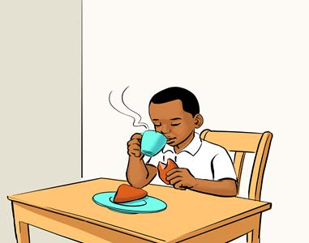
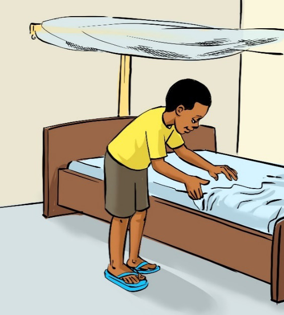
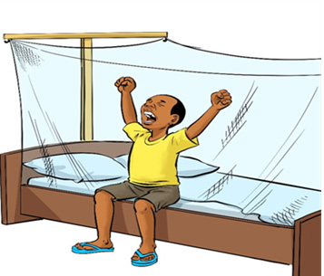
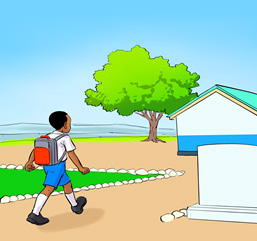
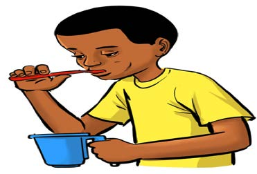

Chunguza picha au mchoro mguso, kisha andika sentensi moja kwa mtiririko sahihi wa matukio; tumia eneo la kuandikia, kibodi au Breli.

Mvulana amekaa mezani akinywa kinywaji cha moto.Chunguza picha au mchoro mguso, kisha andika sentensi moja kwa mtiririko sahihi wa matukio; tumia eneo la kuandikia, kibodi au Breli.

Mvulana amekaa mezani akinywa kinywaji cha moto.Chunguza picha au mchoro mguso, kisha andika sentensi moja kwa mtiririko sahihi wa matukio; tumia eneo la kuandikia, kibodi au Breli.

Mvulana anatandika kitanda.Chunguza picha au mchoro mguso, kisha andika sentensi moja kwa mtiririko sahihi wa matukio; tumia eneo la kuandikia, kibodi au Breli.

Mvulana ameamka kitandani na kujinyoosha.Chunguza picha au mchoro mguso, kisha andika sentensi moja kwa mtiririko sahihi wa matukio; tumia eneo la kuandikia, kibodi au Breli.

Mwanafunzi mwenye begi anatembea kwenda shuleni.Chunguza picha au mchoro mguso, kisha andika sentensi moja kwa mtiririko sahihi wa matukio; tumia eneo la kuandikia, kibodi au Breli.

Mvulana anapiga mswaki kwenye beseni.Chunguza picha au mchoro mguso, kisha andika sentensi moja kwa mtiririko sahihi wa matukio; tumia eneo la kuandikia, kibodi au Breli.